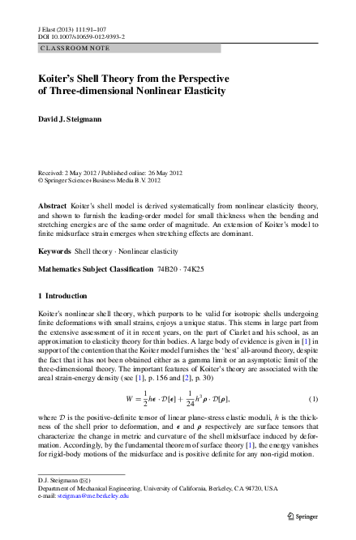
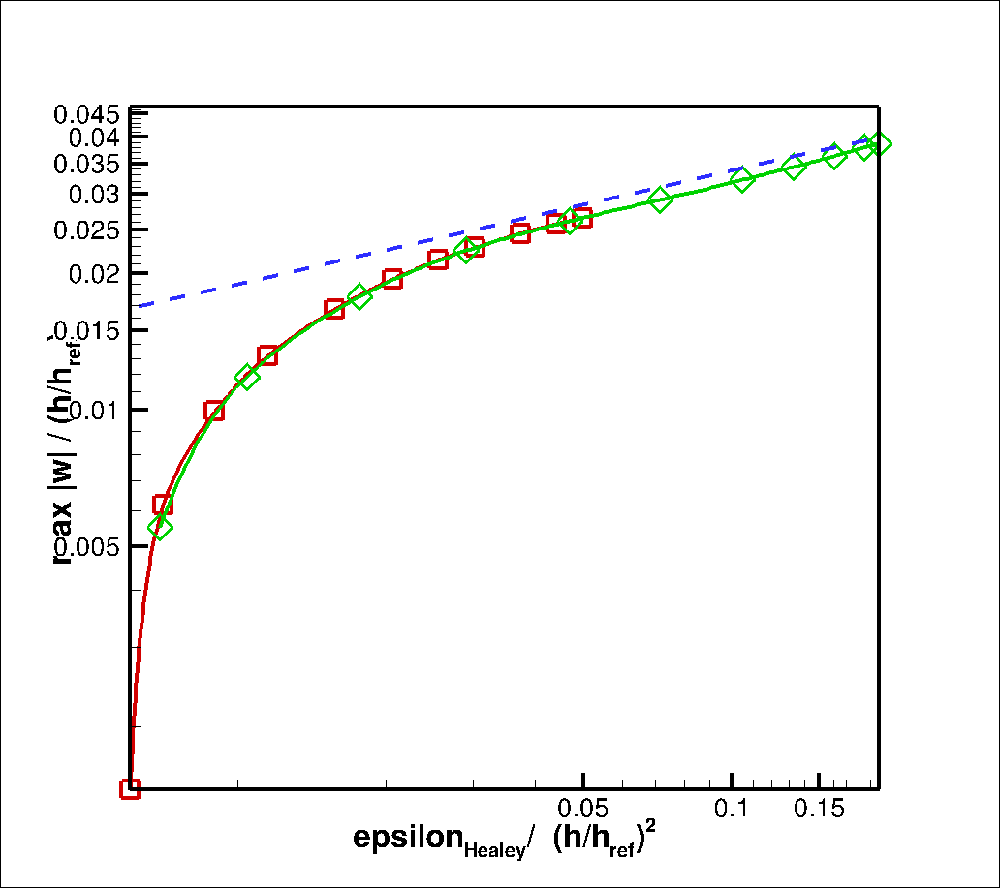

Rules for filenames:
- Single author: Bloggs2014.pdf
- Two authors: BloggsSoggs2014.pdf
- Three or more authors: BloggsEtAl2014.pdf
- Multiple papers which would end up with same
filename: BloggsEtAl2014b.pdf etc.
- Use same stem for all associated material (such as scanned notes
etc.). Script already provides commented out hyperlink to
stem_notes.pdf (e.g. BloggsEtAl2014b_notes.pdf). Feel free to add
others, e.g. BloggsEtAl2014b_fig6a.csv, BloggsEtAl2014b_fig6a.png etc.
How to create new entry:
- Run
./add_pdf.bash BloggsSoggs2014.pdf
This creates on-screen output that can be pasted into index.html.
Make sure you include start/end lines which may be useful for sorting entries
at some point. Then populate bullet point list with comments.
General scanned notes:
|
|
DavidovitchEtAl2011
|
Notes:
- Lovely, lovely, lovely...
- Lame problem controlled by applied tensions. Near threshold
analysis (linear stab analysis) agrees with ComanBassom2007
(and "our" approach; see discussion/notes for ComanBassom2007 paper).
- FFT analysis: extent of wrinkling region from tension field
theory (neglecting all bending effects; setting epsilon = 0).
Wrinkling wavenumber follows from next term in that expansion
(though not done (or at least not presented) formally in this way).
- Stress field and number of wrinkles change significantly as one
goes from NT to FFT regime; wrinkle extent more robust than wavenumber.
- Comments on apparent discrepancy with GeminardEtAl2004
experiments (range of epsilon considered there is too small to
disprove the scalings found here).
- Single parameter case (T_outer=0) is excluded from analysis
because everything's scaled on T_outer (as in ComanBassom2007) where
everything's scaled on U_outer=U_2).
|

|
Davidovitch2012
|
Notes:
- Lovely follow-up from DavidovitchEtAl2011 and again full of genius.
- Assuming that NT and FFT (and everything in between!) wrinkles
can be described by a single azimuthal Fourier mode they
show how the likely-to-observed wrinkle wavenumber (assumed to
follow from overall energy minimisation; they are still checking all
possible modes!) evolves as one increases the forcing (at the inner
boundary) beyond threshold from NT to FFT regime. Ties in nicely
with the limits obtained in DavidovitchEtAl2011 and rectifies some
problems in the earlier analysis.
- Discusses limitations and possible ways to extend theory to
multiple modes etc. very honestly.
|
|
|
GeminardEtAl2004
|
Notes:
- Very nice, mainly experimental paper that uses essentially
the setup that Draga proposed (and already has in the lab). Main
difference is that the deflection inside the inner support is created
by suction rather than a pokey stick).
- Note lovely introduction with lots of good applications too!
- Experiments show that number of wrinkles is independent of
displacement at inner radius
but increases linearly with radius of inner cylinder. Increase in
initial tension (via stretching of the membrane -- achieved by a
nice mechanism!)
leads to a slight increase in wrinkling wavenumber.
- Note: linear dependence on wrinkling wavenumber on inner radius
contradicts DavidovitchEtAl2011 but they comment on this and stress
that range of epsilon (their notation) is too small to be conclusive.
- Wrinkling is supercritical (square root behaviour of amplitude).
- All done for one fixed membrane thickness, h=0.2mm.
- Comment on beta=0 (zero pre-stretch, i.e. no outer displacement)
being both odd (in terms of theory) and difficult (experimentally).
Scanned Notes: GeminardEtAl2004_notes.pdf
|

|
ComanBassom2007
|
- Linear stability analysis for "Lame problem" (circular sheet with
hole, loaded by displacements (!) on inner/outer radius).
- Setup: Given bending stiffness, radii and material properties,
apply outward displacement U_outer at outer edge. Then increase inner displ.
(characterised via lambda=U_inner/U_outer) until wrinkling occurs.
- Prediction for most unstable azimuthal wavenumber: n =
O(mu^{3/4})
- Given that mu^2 = 12 U_outer R_outer / h^2, this is consistent
with DavidovitchEtAl2011 prediction, eqn (10) in the latter paper
(as claimed there).
- Note that Coman's analysis assumes U_outer < 0 so excludes the single
parameter problem that we're after. Using our approach it's possible
to show that for U_outer \ne 0, the wavenumber depends on U_outer
R_outer / h^2 (as in Coman and DavidovitchEtAl2011's analyses) though
we can't extract the power law.
- Note that there's a corrigendum to the paper: ComanBassom2007_corrigendum.pdf
Scanned notes:
|

|
DanielsonNatarajan1975
|
- Nice illustration of the use of tension field theory for
plastic surgery.
|

|
Steigmann2007
|
- Derivation of equations (of sorts) for plates subject to large
deformations.
- This extends the work of [Hilgers and Pipkin, 1992] to
formulate a non-linear plate theory
that is the leading order 2D model that approximates 3D elasticity.
- This is followed up in a lot more detail in [Steigmann, 2010]
- No numerics.
- Allegedly rigorous.
|

|
HealeyEtAl2013
|
- Disclaimer before we start: Despite all the problems listed below a
really lovely paper...
- Somewhat ad-hoc (rather than rational (as claimed)) extension to
FvK by using full geometrically nonlinear expressions for in-plane
stress. This is supposed to cater for large strain but ignores the
fact that Hooke's law is still built into the theory (and is
unlikely to apply at such large strains).
- Discretisation with Hermite quads; stability analysis and large
amplitude computations.
- Key feature of extended model is that:
- Wrinkling only happens for certain sheet aspect ratios
- Amplitude of wrinkles grows (once past threshold) but then decays
again; this is claimed to be "realistic" though no experimental
references are provided. By contrast, FvK wrinkle amplitude grows
indefinitely, which admittedly seems unlikely...
- In the limit h tends to 0, the extra terms in the strain will
vanish, leaving behind exactly FVK. This is also evident in
the plots, as with smaller thickness the solutions match for
longer.
- FvK is asymptotically accurate, given certain scaling assumptions
(which are the questionable bit), so its likely that whatever
FvK is doing wrong at large strains is due to these implicit scaling
assumptions breaking down.
- According to several papers [Hure et al. 2012, Davidovitch et al. 2012]
we should expect that the wrinkled region at very large strains completely
"collapses" the compressive stress (the tensile stress remains virtually
unchanged), by means of the formation of an increasingly fine wrinkling
pattern with vanishing amplitude.
- This is expected in sheets where FFT holds [Davidovitch et al. 2012]
in which, in accordance with the relaxation model of tension field theory,
the fine wrinkling pattern (that is not characterised by the TFT model but is
accounted for by the "subdominant energy") is assumed to be present in
the "collapsed" region [Pipkin 1986, Steigmann 1990, Taylor et al. 2014].
- This only works for sheets that have tensile stresses in one direction
that suppress the formation of "folds" and crumples. Stress focusing such
as folding and crumpling occur in sheets that are "slack" in both directions
(see [Demery et al. 2014] and [Holmes and Crosby 2010]).
- It's possible that the fact that the FvK model does
not predict this is a product of "the over separation of scales" that
[Freisecke et. al., 2006] describe: this over separation issue to the fact
that the scaling assumptions of membrane, Foppl von Karman and bending
theory mean that these theories all have completely different (built in)
behaviour in the limit of vanishing h, which has to be assumed a priori.
- FvK computations do not exploit the (apparently unrecognised)
fact that the thickness can be scaled out. Rescaling, e.g. Fig. 6a,b
(which shows that the onset of wrinkling and the subsequent
finite amplitude deformation do depend on thickness) shows that
data collapses as we predicted.
This implies that for a given aspect ratio and material property
(Poisson's ratio) only one computation is required; data for specific
thicknesses can then be recovered from this.
Plot is here.
- Symmetric and antisymmetric wrinkling occurs (to within numerical
accuracy) at exactly the same pre-stretch (which is very
counter-intuitive because this mode coalescence is
non-generic). Implies that any super-position of the symmetric and
antisymmetric modes is also a solution; this implies the existence
of a whole "orbit" of solutions.
- Good news: The paper certainly motivates looking into
thickness effects. The ad-hoc modification to the in-plane strain
means it no longer scales like (h/L)^2 but also has an (h/L)^4 term in
it. This introduces a genuine thickness dependence in the results.
Other (better?) modifications are likely to do so too. Paper provides
brief acknowledgement of Steigmann's theory.
|
|
|
NayyarEtAl2015
|
Notes:
- Experimental study confirms that in "pulled strip" problem the
amplitude of the wrinkles initially increases with (post-critical)
imposed stretch then goes down again (when imposed strain exceeds
about 10%). Earlier hyper-elastic models (e.g. HealeyEtAl2013 and
LiHealey2015) predict "isola-center" bifurcation where wrinkles
disappear completely at sufficiently large strain (about 30%).
Experiments show
that amplitude is reduced gradually. This behaviour is captured well
by various visco-elastic models which also capture rate dependence
(once parameters are tuned suitably, of course). Note also that
experiments show very large residual strains (20% after a
max. imposed strain of 40%; see Fig. 5a).
- Computations are done with abaqus again. So, while details are
hazy, it all seems believable and well done.
- Overall, good analysis of what's becoming quite a dirty problem
in this regime. Check with Draga to see if she thinks we could do
the experiment with proper (hyper-)elastic material instead.
|
|
|
Steigmann2013a
|
Notes:
- This article presents a theory for sheets that incorporates finite strain
into the Koiter model.
- It specialises to the case of reflection symmetry of the plate properties
with respect to the midplane. It also assumes isotropic plates properties.
- The model has to satisfy certain constitutive requirements, which are
outlined in [Steigmann, 2003] which encompasses the materials studied by
[Carroll, 1988].
- The model has to be hyperelastic: as the derivation assumes the existance
of a strain-energy density function. This means whatever model used must be
conservative.
- The only restriction on the constitutive hypothesis is that the strain energy:
U( F)=W( E) where
E =( F FT- I)/2 where I is the
identity for three space and F is the deformation gradient .
- This (apparently) has been explained in [Steigmann, 2003] and includes
the models studied by [Carroll, 1988]. These models encompass the Mooney-Rivlin
and by extension the Neo-Hookean model and also Kirchhoff-St Venant (which was
used by [Taylor et al 2014,2015]).
- Relies on the scaling assumption that stress | S|=o(1) in terms of h,
in other words stress vanishes with vanishing thickness (c.f. FvK with more
specific assumptions about h scaling).
- This is needed to form a well--posed two dimensional variational problem, and
has the consequence that the constitutive part of the bending energy is evaluated
at zero strain : therefore the constitutive relation modifies only the
membrane part.
- It is well--posed as a minimisation problem, but no existence and
uniqueness theorems have been proven.
- This is the model [Taylor, Bertoldi 2014] use and also
[Taylor, Davidovitch 2015], it is also the theory that I propose
we write into oomph-lib.
|
|

|
Steigmann2013b
|
Notes:
- This presents the nonlinear Koiter theory of shells and places it in
relation to 3D nonlinear elasticity. It additionally presents an extension to
finite midsurface strains, which restricts the model to Kirchhoff St Venant
constitutive laws.
- This article presents an alternative derivation of Koiters shell theory that
allows an insight into its usefulness and scope in relation to 3D elasticity.
- As with all these models it is assumed that h < < L
- Further specialisation to shells with midplane symmetry of material
properties is made.
- This shows exactly how the original Koiter model and the Steigmann-Koiter
model differ: on the stress assumption.
- First it makes the same constitutive assumption as [Steigmann, 2013b] but
we aren't done. We need the assumption the we can separate the bending and stretching
energies.
- The final assumption Steigmann makes for his model is that the midsurface
stress, S= o(1), and thus vanishes with vanishing thickness, as opposed to the
Koiter model which assumes that the stress scales as S= a h + b h^2, with a and
b independent of h.
- For the Koiter model then, weakly non--linear extension to the Kirchhoff-St
Venant model are appropriate, but the separable energies are implied by the scaling
assumption. The a priori restriction to Kirchhoff-St Venant is not necessary, but the
strain.
- If the weaker assumption is used, the constitutive function has to be
Kirchhoff-St Venant which gives separable bending and stretching energies.
- This article proposes the model of [Steigmann, 2013a] as an alternative to
the Koiter model and an extension to finite midsurface strains.
|
|
|
CerdaMahadeven2003
|
Notes:
- Lovely explanation of how the Poisson effect induces wrinkling in this
system.
- Really well explained Physics and an intuitive way of thinking about
wrinkling.
- Builds on the results of tension field theory to create a compromise
`far--from--threshold' theory.
- The assumptions drastically simplify the problem, but capture the essence
of the behaviour (certainly in hindsight with more complex studies such as
[Puntel, et al. 2010], and numerics of reduced or full problems
[Kim, et al. 2010][Nayyar et al. 2011]) which is a credit to the sheer intuition
of the authors.
- They suggest the use of geometrically non--linear elasticity, but even so
the Foppl von Karman--like functional they use is probably inappropriate for the
picture shown at 10% stretch.
- To model the real problem they clamp two ends of the sheet which is in a
state of plane stress, then impose uniform lateral contraction (related to the
transverse stretch by the Poisson effect) by Lagrange multiplier, to approximate
the Poisson effect.
- We can non-dimensionalize it all and just get lambda ~ T^(-1/4) where
T is the non-dimensional tension (i.e. the single control parameter).
- Scanned notes show that prediction for wavenumber (under equation (5))
is consistent with our FvK non-dimensionalization.
- Amplitude grows indefinitely with imposed stretch (again under
eqn (5)). As Healey observes this seems unlikely and may well
indicate another shortcoming of FvK. Mahadevan's prediction
for the dependence of the amplitude on the imposed stretch is
consistent with HealeyEtAl2013, based on the scaled scans of his Fig.
6ab -- at least in the large-amplitude regime:

Scanned Notes: CerdaMahadeven2003_notes.pdf
|
|
|
Steigmann2008
|
Notes:
- Shell and plate theory for linear elasticity.
- Generalises linear Koiter theory to include order h^3 terms
- Also purports to includes a constrained model with "non--standard 2D
strain-gradient effects" that affect the equations in a thin layer near an edge.
These are motivated by comparison to 3D elasticity.
- Incorporates the models of bending and stretching under single framework
with an explicit h parameter.
- The in and out of plane equations decouple for plates, giving the biharmonic
equation, and a separate equation for in--plane behaviour which contains h
dependence.
- The boundary conditions on the bending equation seem to be of standard form,
i.e mnn=Mnn and vn=-dl/dn-dmnl/dl=Vn (where l is Laplacian and mnn, mnl are
internal normal and twisting moments respectively. Mnn is an applied normal
moment and Vn is an applied edge force per unit length)
- Comment (D): He remarks that "classical plate theory... corresponds to
conditions (m_x,m_y)=0 for which he says his assumption is less restrictive.
Is the condition on (m_x,m_y) not the "naive" b/c that Poisson proposed that was
later corrected by Kirchhoff (see Selvadurai, ~page 298).
|
|
|
GervaisEtAl1997
|
Notes:
- Finite element buckling analysis of FvK. Investigate mode jumping in FvK.
- Uses C0 triangular element of degree 2.
- Uses projections for second partial derivatives of stress function X, and
deflection w. Relies upon clamped, rectangular boundary conditions.
- They compute all components of the Hessian by projection (as in my
formulation) and give a nod to the fact that this is necessary to impose the
general boundary conditions for the bending equation for arbitrary geometry.
- 8 Equations in total.
- The boundary conditions on the stress function investigated in this study
are not always physically meaningful.
|
|
|
LiHealey2015
|
Notes:
- Presents an extension to Healey et al. 2013 by comparing the extended
strain model of FvK, FvK and two hyperelastic models that are purported to be
more useful than the Koiter-Steigmann approach.
- The hyperelastic constituitive models considered are Kirchhoff-St Venant
neo-Hookean and Mooney-Rivlin.
- All models use kinematic hypothesis (separated bending and stretching
energies) and an approximation that the deformed normal
n ≈ ez
- This is justified by the relative sizes of the wrinkle amplitude and
wrinkle wavelength.
- The models are effectively all von Karman-like with different membrane
terms due to different constitutive equations.
- Purports that the KSV model is not as "good" as the Mooney-Rivlin and
neo--Hookean, (which is to be expected at the large strains).
- Claims that the deficiency in the KSV model is in the membrane part of
the model, and therefore Steigmann/Koiter models still suffer from the same
problem.
- References the Steigmann-Koiter shell model for this rather than the
plate model. The plate model seems to all intents and purposes be valid for most
hyper-elastic models (incl. Mooney Rivlin, Neo--Hookean and Kirchhoff-St Venant).
- Interestingly the assumption that the bending part uses linear elasticity whilst
the stretching part must be hyperelastic is derived by Steigmann, but Steigmann
bending energy includes in--plane contributions due to the finite rotation of the
normal to the sheet in the deformed reference frame.
- This is really just a comparison of FvK with different constitutive models
at high strain, rather than an investigation of "the best" thin plate model.
- It is probably to be expected that at high strains the dominant effects are
from the constitutive model, rather than the plate approximations used. This
problem would affect 3D elasticity in much the same way.
- This article is still in press and has not been published yet.
|
|
|
Zheng2009
|
Notes:
|
|
|
NayyarEtAl2011
|
Notes:
- Disclaimer: this paper has many admirable elements, despite any critiscim.
This includes the first study of large strain behaviour in thin sheets. It also
takes care to investigate the link between compressive stress and wrinkling,
which creates a useful addition to the literature.
- Uses some form of Abaqus hyperelestic shell model for simulations.
- Has no explanation of the model used other than that it is Neo-Hookean
- This paper does not state what the boundary conditions on "w" are or write
down any equations!
- Abaqus is based on the Koiter model, which uses slightly different
assumptions to Steigmann model for the strain scaling (see [Steigmann 2013b]).
- Using stress analysis (in other words pinning w=0 and solving for u and v)
with a hyperelastic (NH) model, the sheets which have compressive stress are
analysed for a range of aspect ratio α and strain ε.
- This analysis highlights several different qualitative behaviours in the
compressive stresses (see graph).

- Phase I: the stress is tensile. Phase II: There is localised compression on
the centre line near the two edges. Phase III: the compression occurs only in
the centre of the sheet. Finally phase IV: the peak compressive region split into
two along the transverse direction.
- An eigenvalue buckling analysis (LSA) of the wrinkling problem (w, u, v) at
1% (pre)stretch. Before buckling all of the eigenvalues of the FEM Jacobian are
negative, presumably then Nayyer increases α each time a new eigenvalue
becomes positive, and then finds the corresponding eigenmode.
- The implementation of this seems slightly peculiar, four values of α
are picked (in the four regimes indicated by the stress analysis) and then the
lowest eigenmode is picked. Nayyar mentions that continuation in stress could
also be performed.
- The wrinkling mode that become available display qualitatively similar
behaviour to the compression phases. In phase I there is no wrinkling, phase II
there are lateral split modes. Phase II there are centred modes and in Phase 4
there are transversely split modes.
- A basic model for estimating the stress is borrowed from [Freidl et
al 2000] and modified slightly using results from [Timoshenko, Gere 1986].
- The minimum of this stress is found keeping "a" constant. See the cdf plot
for a plot of the predicted stress versus aspect ratio.
- In the simplified model the minimum stress is independent of aspect
ratio: only the wavenumber depends on aspect ratio. For large aspect ratios the
the critical stress is approximately constant and equal to the minimum positive
stress of the graph.
- This does not seem to be borne out in the numerics: we would expect that as
aspect ratio is increased the onset strain saturates.
- The model is used, in conjunction with the known behaviour of the tensile
to compressive stain ratio, to predict that wrinkling may only occur for a
specific range of nominal strain.
- The model also predicts the correct scaling with thickness, which is to be
expected.
- The model is barely used: it predicts at fixed strain that the buckling
modes that are available will increase with aspect ratio, and each time the new
mode will have one more mode.
- The model also predicts that the onset strain will be ~ 0.011, which as an
order of magnitude agrees well with the results!
- It is not mentioned that the model erroneously predicts that the wrinkling
will always be lateral, whereas modes with two transverse wrinkles are found!
- The onset stress results of [Puntel, Deseri 2011] disagree with the results
of this paper by orders of magnitude, which is put down to the boundary
conditions (which are different in both stress and possibly w).
- They then perform a post-buckling analysis using the RIKS methid. They a
sum of four of the onset modes as initial perturbations with an amplitude of 0.1%
of the sheet thickness.
- They do not perform any analysis of the sensitivity to initial
perturbations. This is performed in [Nayyer 2010].
- They show that for hyperelastic models, contrary to Fvk, the amplitude does
not increase monotonically.
- Purportedly linear elastic models predict the same behaviour ([Nayyer
2010]).
- (Comment:) I could not find this in the thesis, but it would not surprise me
if KSV displayed this behaviour. If a moderate rotation (FVK) constitutive model
was adopted I expect it would agree well with Mahadevan (although the ABAQUS
model may implement a differing bending energy).
- The scaling law for wavenumber agrees very well the prediction by
Cerda and Mahadaven, again a tribute to their incredible physical insight!
|
|
|
CerdaEtAl2002
|
Notes:
- Basic experiment and simpler derivation of scaling argument of the later paper.
- Uses U_b+U_s in terms of the wavelength and amplitude. Uses inextensibility to
determine the amplitude in terms of the wavelength. Uses this to derive the famous
scaling law.
- The experiment which stretched a thin sheet agrees well with the scaling law,
but there are no error bars which would help to determine what sort of a range of
scaling exponents would agree with the data.
- There is an observable data collapse of several lengths of sheets, which again
supports the scaling argument.
- Lovely concise explanation of observable phenomena in thin sheets, supplements
the more detailed approach of [Cerda and Mahadevan, 2003]
|
{kind=link}
{kind=link}